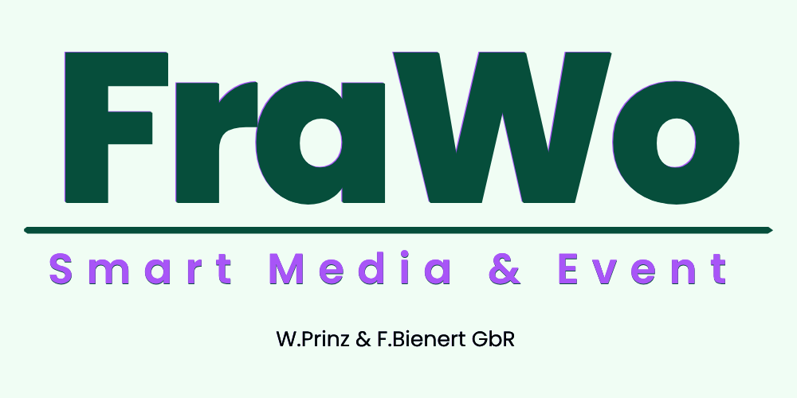

Technische Planung
Setup-Planung nach Mass, Signalwege und Zeitmanagement.
FraWo plant, baut und betreut Ton-, Licht- und Zuspielsysteme fuer Clubnaechte, Kulturformate und Sonderflaechen. Professionell, verlaesslich und mit klarem Fokus.

Setup-Planung nach Mass, Signalwege und Zeitmanagement.
Umbauten, Zuspielung und technische Rundumbetreuung.
Besuchersysteme und Ablaufsteuerung fuer moderne Formate.